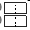

clearvars;
sdir = fileparts(matlab.desktop.editor.getActiveFilename);
addpath(sdir);
addpath([sdir '\ExampleTopologies'])
addpath([sdir '\LTspice NetLists'])
modelfile = 'AsyncBoost'; PLECsModel = 'Boost_Async';
loadSimulinkOutputsToBase(modelfile,PLECsModel);
circuitPath = [modelfile '/' PLECsModel];
sim = SMPSim();
sim.initialize(circuitPath);
sim.steadyState();
sim.plotAllStates(1)
sim.plotAllOutputs(2)
modelfile = 'BuckTest1.net';
sim = SMPSim();
sim.initialize(modelfile);
sim.steadyState();
sim.plotAllStates(3)
sim.plotAllOutputs(4)
modelfile = 'AsyncBoost'; PLECsModel = 'Boost_Async';
loadSimulinkOutputsToBase(modelfile,PLECsModel);
circuitPath = [modelfile '/' PLECsModel];
sim = SMPSim();
sim.initialize(circuitPath, swvec, us, ts);
sim.steadyState();
sim.plotAllStates(5);
hold(gcf().Children,'on');
sim.findValidSteadyState();
sim.plotAllStates(5)
modelfile = 'BuckTest1.net';
sim = SMPSim();
sim.initialize(modelfile);
sim.plotAllStates(6);
hold(gcf().Children,'on');
sim.findValidSteadyState();
sim.plotAllStates(6)
modelfile = 'DAB_Incomplete'; PLECsModel = 'DAB_oneCap';
open_system(modelfile,'loadonly');
circuitPath = [modelfile '/' PLECsModel];
sim = SMPSim();
conv = sim.converter;
top = sim.topology;
try
top.loadCircuit(circuitPath);
catch e
disp(getReport( e, 'extended', 'hyperlinks', 'on' ) )
end
modelfile = 'AsyncBoost'; PLECsModel = 'Boost_Async';
circuitPath = [modelfile '/' PLECsModel];
sim = SMPSim();
sim.initialize(circuitPath);
states = sim.stateNames
CoutLoc = sim.sigLoc('Cout','x');
switches = sim.switchNames
inputs = sim.inputNames
VdcLoc = sim.sigLoc('V_dc','u');
outputs = sim.outputNames
VdsLoc = sim.sigLoc('FET:Vm','y');
modelfile = 'AsyncBoost'; PLECsModel = 'Boost_Async';
loadSimulinkOutputsToBase(modelfile,PLECsModel);
circuitPath = [modelfile '/' PLECsModel];
sim = SMPSim();
sim.initialize(circuitPath, swvec, us, ts);
sim.findValidSteadyState();
Xss = sim.Xs;
Yss = sim.Ys;
YssE = sim.YsEnd;
FETLoc = sim.sigLoc('FET','sw');
IdsLoc = sim.sigLoc('FET:Am','y');
VdsLoc = sim.sigLoc('Coss','x');
switchingActions = diff([ sim.swvec(end,:); sim.swvec],1);
FEToffInt = find(switchingActions(:,FETLoc) == -1);
FETonInt = find(switchingActions(:,FETLoc) == 1);
FET_VdsOn = Xss(VdsLoc, FETonInt)
FET_Ioff = YssE(IdsLoc,FEToffInt-1)
modelfile = 'BuckTest1.net';
sim = SMPSim();
sim.initialize(modelfile);
sim.findValidSteadyState();
[avgXs, avgYs] = sim.ssAvgs();
VoutLoc = sim.sigLoc('C1','x');
ILLoc = sim.sigLoc('L1','x');
VgLoc = sim.sigLoc('V1','u');
IgLoc = sim.sigLoc('Im_Ig','y');
Pout = avgXs(VoutLoc)*avgXs(ILLoc);
Pin = sim.u(VgLoc)*avgYs(IgLoc);
eta = Pout/Pin*100
modelfile = 'AsyncBoost'; PLECsModel = 'Boost_Async';
loadSimulinkOutputsToBase(modelfile,PLECsModel);
circuitPath = [modelfile '/' PLECsModel];
sim = SMPSim();
sim.initialize(circuitPath, swvec, us, ts);
sim.findValidSteadyState();
VoutLoc = sim.sigLoc('Cout','x');
ILLoc = sim.sigLoc('L1','x');
sim.plotAllStates(1,[CoutLoc ILLoc]);
modelfile = 'AsyncBoost'; PLECsModel = 'Boost_Async';
loadSimulinkOutputsToBase(modelfile,PLECsModel);
circuitPath = [modelfile '/' PLECsModel];
sim = SMPSim();
sim.initialize(circuitPath, swvec, us, ts);
sim.findValidSteadyState();
VoutLoc = sim.sigLoc('Cout','x');
ILLoc = sim.sigLoc('L1','x');
[xs, t, ys] = sim.SS_WF_Reconstruct();
Ilrms = sqrt(1/t(end)*trapz(t,xs(ILLoc,:)))
sdir = fileparts(matlab.desktop.editor.getActiveFilename);
plotDigitizer([sdir '\resources\EPC2023_datasheet.pdf'])
Warning: Name is nonexistent or not a directory:
C:\Users\dcostine\Dropbox\UTK\Research\AURA\doc\ExampleTopologies
Warning: Name is nonexistent or not a directory:
C:\Users\dcostine\Dropbox\UTK\Research\AURA\doc\LTspice NetLists
Component Type Expression
_________ ____________________________ __________
{'L1' } {'Inductance' } {'Lp' }
{'C1' } {'Capacitance' } {'Cp' }
{'C2' } {'Capacitance' } {'Cs' }
{'FET1'} {'On-resistance Ron' } {'ronp'}
{'FET2'} {'On-resistance Ron' } {'ronp'}
{'FET3'} {'On-resistance Ron' } {'ronp'}
{'FET4'} {'On-resistance Ron' } {'ronp'}
{'FET5'} {'On-resistance Ron' } {'rons'}
{'FET6'} {'On-resistance Ron' } {'rons'}
{'FET7'} {'On-resistance Ron' } {'rons'}
{'FET8'} {'On-resistance Ron' } {'rons'}
{'Vout'} {'Voltage' } {'Vo' }
{'R1' } {'Resistance' } {'Rp' }
{'R2' } {'Resistance' } {'Rs' }
{'Tr2' } {'Number of turns' } {'np' }
{'Tr2' } {'Magnetization inductance'} {'Lm' }
{'D1' } {'On-resistance Ron' } {'ronp'}
{'D2' } {'On-resistance Ron' } {'ronp'}
{'D3' } {'On-resistance Ron' } {'ronp'}
{'D4' } {'On-resistance Ron' } {'ronp'}
{'D5' } {'On-resistance Ron' } {'rons'}
{'D6' } {'On-resistance Ron' } {'rons'}
{'D7' } {'On-resistance Ron' } {'rons'}
{'D8' } {'On-resistance Ron' } {'rons'}
Error using <a href="matlab:matlab.internal.language.introspective.errorDocCallback('PLECScircuitParser/inspect')" style="font-weight:bold">PLECScircuitParser/inspect</a>
Undefined parameters encountered when parsing PLECS circuit. See table
above for missing parameters.
These parameters must be defined in the base workspace or altered in the
PLECS circuit
Error in <a href="matlab:matlab.internal.language.introspective.errorDocCallback('SMPStopology/loadCircuit', 'C:\Users\dcostine\Dropbox\UTK\Research\AURA\@SMPStopology\SMPStopology.m', 87)" style="font-weight:bold">SMPStopology/loadCircuit</a> (<a href="matlab: opentoline('C:\Users\dcostine\Dropbox\UTK\Research\AURA\@SMPStopology\SMPStopology.m',87,0)">line 87</a>)
obj.circuitParser.inspect();
Error in <a href="matlab:matlab.internal.language.introspective.errorDocCallback('codeExamples', 'C:\Users\dcostine\Dropbox\UTK\Research\AURA\testConverters\codeExamples.mlx', 60)" style="font-weight:bold">codeExamples</a> (<a href="matlab: opentoline('C:\Users\dcostine\Dropbox\UTK\Research\AURA\testConverters\codeExamples.mlx',60,0)">line 60</a>)
top.loadCircuit(circuitPath); %This fails with explanation of missing variables
Error in <a href="matlab:matlab.internal.language.introspective.errorDocCallback('evalmxdom>instrumentAndRun', 'C:\Program Files\MATLAB\R2022b\toolbox\matlab\codetools\private\evalmxdom.m', 116)" style="font-weight:bold">evalmxdom>instrumentAndRun</a> (<a href="matlab: opentoline('C:\Program Files\MATLAB\R2022b\toolbox\matlab\codetools\private\evalmxdom.m',116,0)">line 116</a>)
text = evalc(evalstr);
Error in <a href="matlab:matlab.internal.language.introspective.errorDocCallback('evalmxdom', 'C:\Program Files\MATLAB\R2022b\toolbox\matlab\codetools\private\evalmxdom.m', 21)" style="font-weight:bold">evalmxdom</a> (<a href="matlab: opentoline('C:\Program Files\MATLAB\R2022b\toolbox\matlab\codetools\private\evalmxdom.m',21,0)">line 21</a>)
[data,text,laste] = instrumentAndRun(file,cellBoundaries,imageDir,imagePrefix,options);
Error in publish
Error in <a href="matlab:matlab.internal.language.introspective.errorDocCallback('matlab.addons.toolbox.internal.publishExamples>publishMFile', 'C:\Program Files\MATLAB\R2022b\toolbox\matlab\toolbox_packaging\+matlab\+addons\+toolbox\+internal\publishExamples.m', 30)" style="font-weight:bold">matlab.addons.toolbox.internal.publishExamples>publishMFile</a> (<a href="matlab: opentoline('C:\Program Files\MATLAB\R2022b\toolbox\matlab\toolbox_packaging\+matlab\+addons\+toolbox\+internal\publishExamples.m',30,0)">line 30</a>)
publish(getQualifiedFunctionOrMethodName(file));
Error in <a href="matlab:matlab.internal.language.introspective.errorDocCallback('matlab.addons.toolbox.internal.publishExamples', 'C:\Program Files\MATLAB\R2022b\toolbox\matlab\toolbox_packaging\+matlab\+addons\+toolbox\+internal\publishExamples.m', 8)" style="font-weight:bold">matlab.addons.toolbox.internal.publishExamples</a> (<a href="matlab: opentoline('C:\Program Files\MATLAB\R2022b\toolbox\matlab\toolbox_packaging\+matlab\+addons\+toolbox\+internal\publishExamples.m',8,0)">line 8</a>)
[statuses(idx), ids{idx}, messages{idx}] = publishMFile(files{idx});
states =
4×1 cell array
{'L1' }
{'Cout'}
{'Cd' }
{'Coss'}
switches =
2×1 cell array
{'FET'}
{'D1' }
inputs =
2×1 cell array
{'V_dc' }
{'D1:Vf'}
outputs =
4×1 cell array
{'FET:Am'}
{'FET:Vm'}
{'D1:Am' }
{'D1:Vm' }
FET_VdsOn =
68.0230
FET_Ioff =
12.7582
eta =
68.7005
Ilrms =
1.8563


